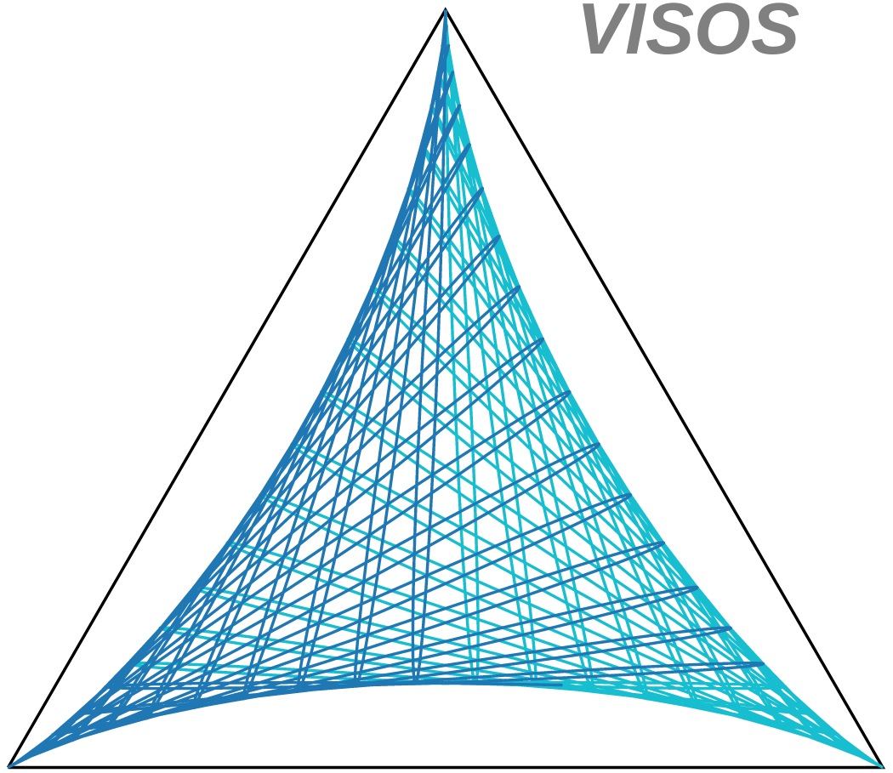

01 — OSCILLATIONS
VISOS: seeing flavour change
Making quantum behaviour visible. VISualisation of OScillation: three neutrino-flavour probabilities become a point in a triangle; their evolution traces a path. turns neutrino flavour change into geometric trajectories. I conceived VISOS and have led its development. Its interactive companion lets you explore how CP violation, matter and energy shape oscillations, connecting physical intuition with experimental questions.
Try VISOSim ↗ (
Concept and gallery ↗

The trimaximal logo’s crossing segments and three-cusped outline echo the deltoid associated with Kakeya’s rotating-needle problem. This is a geometric analogy, not a claim that the logo is a Kakeya set. Wang and Zahl proved the three-dimensional Kakeya set conjecture in 2025.)Concept and gallery ↗